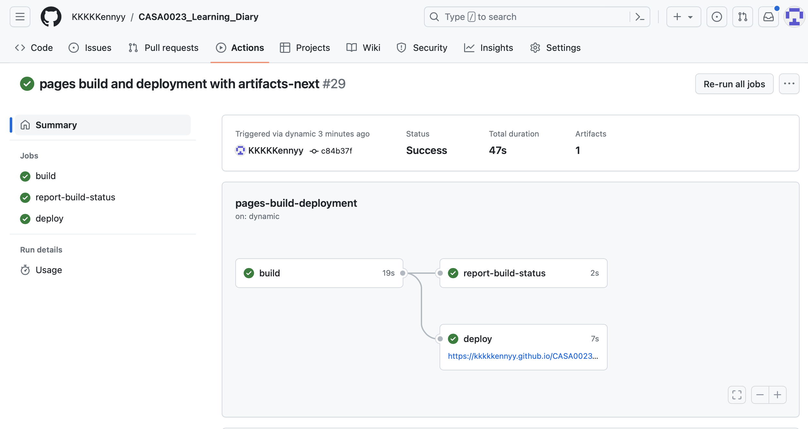

option(htmltools.dir.version = FALSE)Week 02 Portfolio
1. Xaringan
1.1. Xaringan Sample
Xaringan is a new tool for me, it’s a package in R. It can knit rmd into a html for presentation, at first I thought it’s a hard thing to do, but actually with the help of css it can have a lot of functions and styles.And it is very clear to use ‘—’ to separate different pages.
1.2. Bugs I’ve encountered in using Xaringan for Slides (FYI)
Both Xaringan and XaringanExtra require remote installation, and the instructions need to be executed on Console instead of Terminal
When the template file is created, the DT package from CARN should also be installed
Unlike yml documents, ‘—’ does not need to appear in pairs in Xaringan
Avoid the unconcise directory structure that comes with versioning
In the header of the Rmd file, several CSS files, which will be invoked in sequence in Knitting, can be declared at the same time
If you want the entire slides font to be adjusted, you should declare this in your CSS file. The font declared in the header can only affect the font of the current page
Setting eval = FALSE at the beginning of a code block allows the code not to run, but to be displayed on the web page. Setting echo = FALSE can display only the result of running the code without showing the code
1.3. Useful Materials
2. Quarto Mark Down
Quarto Markdown is an upgraded version of R markdown. qmd document can be rendered into html or pdf or other formats.
Compared to HTML, qmd is much simpler and doesn’t require pairs of ‘<>’ to declare styles, just a few symbols (like *, _, #) to create some styles.
In addition, images can be inserted by providing a file path or link, and by default they fill the screen without worrying about placement.
2.1. Embedded Xaringan in QMD
If that preview doesn’t work, please click Link to find out more.
2.2. Bugs I’ve encountered in using QMD (FYI)
You should first declare “output-dir: docs” in the yml file, which is consistent with the default setting in GitHub pages deployment. Remember not to type docs as docx, or you will get an error in the GitHub Action section.
All changes in Rstudio must render before committing and pushing. The core is to upload render out the html file, which can help GitHub better build and deploy web pages
When embedding Xaringan into html. Xaringan slides needs to be published first, and in the process, Rmd should preferably be saved as index.rmd. In this way, there will be no bug that can’t find index during build and deployment. Although it was mentioned in class that it is best not to change index.qmd for qmd book, Xaringan has the same requirement
After the push, you need to wait for the build and deployment to be completed before the page is updated. Don’t check a web page and think something’s wrong because it hasn’t been updated. GitHub needs to be given a little time to build and deploy the page

3. Reflection
Just like learning Python, the hardest part is configuring the environment. Even though I’ve touched markdown in CASA0013 last term, how to change qmd from local to online in GitHub’s pages is a brand new challenge. As I shared in the Bugs section (1.2. and 2.2.), there were always different issues at the very beginning. index is so important; docs must be named correctly as the default folder; I have to render before updating the QMD and docs folder; and I have to wait for the page to be updated in the GitHub deploy.
There were always different challenges, but thankfully the information on Slack was great in helping me embed Xaringan into qmd without any problems, and Google is a great search engine for linking to various official docs or blogs. In addition, using ChatGPT wisely can be a huge boost to efficiency. Although the content it provides may not be accurate, and we need to double-check. However, a general framework and concepts help me to know and understand to a certain extent.
I am more proficient in the process than I was before using markdown. And this time, I learnt about yml’s declaration of the overall site configuration and the relationship between qmd files. After constant debugging and redeployment, I began to feel that I had mastered the basics of using this tool and was able to layout and update content with relative proficiency.
Not only do these tools help me with coursework and the learning dairy, but I think I can still use the tools in the future when I want to document something and keep it up to date. Not only are they valuable now, but they will help in the future.